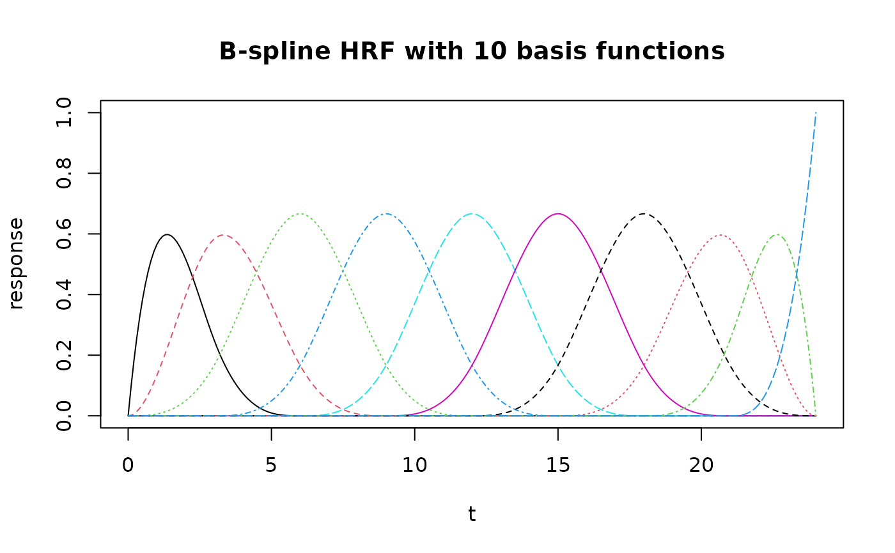

Generates an HRF object using B-spline basis functions with custom parameters.
This is the generator function that creates HRF objects with variable numbers
of basis functions, unlike the pre-defined HRF_BSPLINE which has 5 functions.
Usage
hrf_bspline_generator(nbasis = 5, span = 24)
Arguments
- nbasis
Number of basis functions (default: 5)
- span
Temporal window in seconds (default: 24)
Value
An HRF object of class c("BSpline_HRF", "HRF", "function")
See also
HRF_objects for pre-defined HRF objects,
getHRF for a unified interface to create HRFs
Examples
# Create B-spline basis with 10 functions
custom_bs <- hrf_bspline_generator(nbasis = 10)
t <- seq(0, 24, by = 0.1)
response <- evaluate(custom_bs, t)
matplot(t, response, type = "l", main = "B-spline HRF with 10 basis functions")
